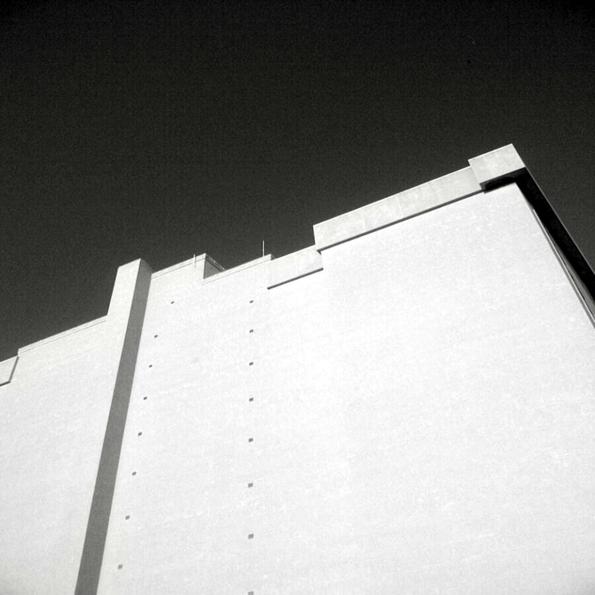

I.
I think of you and I think TALL.
As we danced, the buttons on your shirt front
Pressed circles on my face,
Your angular cheekbones a sharp contrast
To my dimpled softness.
The hormone-sweet smell of youth
Seeped through the starched white cotton of your shirt
As we waltzed carefree and young of heart
To the wedding altar.
We laughed often and joked of
Growing old together.
I was radiant and dizzy with love
You called me your princess in lace veil
And white ruffles.
II.
Through open windows gossamer curtains
Blew freely in the wind.
The white ruffles waved in celebration
As we joined in primal mating on your grandmother's
Four poster bed.
Youthful lust waned as the babies came,
One-two-three robust and red cheeked.
Hell-bent on perfection
I followed modern marriage manuals to the letter.
White ruffles were replaced by blue jeans and aprons.
You never did learn to like tuna in a casserole.
And I never ever said no
To your fumbling hands sneaking the warmth of my body's secrets
Under hidden cover of the night.
Other nights I tuned in for the sound of your truck
Purring home at last in the driveway.
III.
One 2am you covered me with wafting dollar bills
Won in a craps game,
And I wondered what that had to do with the truck business,
But I wasn't going to harp like my mother.
They said she killed my father with a heart attack.
So I said nothing.
Your golden wedding band flew out of the window with a beer can
One blistery winter night
You said.
Your fingers were slim and shrunk from the cold
You said.
IV.
Was it 1987 we celebrated the new year
In the Laundromat?
We toasted new beginnings
Over the water sloshing and the
Whump-whump of tennis shoes in the dryer.
What followed was the first job lost.
(Due to missing company funds I was told.)
T'was not the last.
The spiral hastened
Down,
Always accompanied by a Schlitz Tallboy
Gripped tightly in your bony knuckles
Until the cool metal container became indistinguishable
From your hand.
V.
Frantic for a solution,
One night I sent the children away and
Served you steak and wine in unfamiliar candlelight that
Spiked eerie shadows over children's toys and the worn out high chair.
I used all the woman-tricks I knew
To ease the frown in your face.
I listened.
I laughed.
I cajoled.
I flirted.
I fucked,
But I could not compete with the golden liquid brew.
It gave you seductive solace I could not.
I was your judge and jury and
It had become your understanding,
Forever faithless friend.
My Pollyanna smile became a frozen grimace mask.
And I looked for shabby comfort wherever I could.
You never even noticed.
Finally I fled,
We become one more divorce statistic.
Dated May 18th.
VI.
The last time I saw you,
You sat heavily in our easy chair,
Gray trousers dark-stained and urine-damp.
Your head hung low.
Your watery blue eyes pleaded for help as the coffee cup trembled
In your long slender fingers.
Our children gaped in adolescent horror at the shrunken visage
Of their hero-daddy.
I didn't know what to do!
I couldn't return you to what you had become.
Spending nights in a cold borrowed car
Writing hot checks
Sleeping in a cemetery surrounded by metal vaults and stone pillars.
You surrendered meekly enough as
Our son dressed you up.
I tucked a clean white hanky in your pocket
And sent you home to the first woman who ever loved you.
Safely tucked away in my file cabinet along with car titles,
Life insurance policies, and 20-year roof warranties is
The Coroner's Report.
"Self-Inflicted gunshot wound"
States the ragged piece of paper.
The death notice of white ruffles' dreams is
Dated May 18th.
VII.
Today I live in a reasonable world with reality as my companion.
My dreamy dimples have deepened with age
Thank God I no longer need fairy tale heroes.
A pale flag flaps wildly in the winter wind.
White lilacs in the first blush of spring,
White ruffle dreams into my grown-up mind.
Then
The warm body next to me moves closer
In the rustle of the night and
I imperfectly love an imperfect man.
Gratitude bathes me in a rosy glow
As my heart smiles in the night.
I think of me and I know:
Blessed.
I think of you and I pray:
Peace.
Written by Mary MacKenzie. (RIP) Reprinted with permission.
